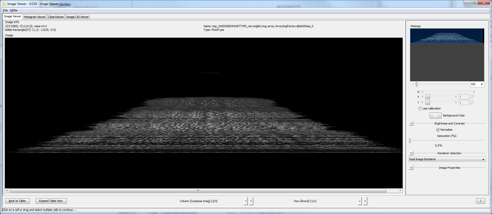

@Plugin(type = Command.class, headless = true, menuPath = "FMI>Straighten Image")
public class MaskStraightener implements Command {
@Parameter(label = "Input image")
private ImagePlus imp;
@Parameter(label = "Object mask")
private ImagePlus mask;
@Parameter(label = "Line Width")
private int lineWidth;
@Parameter(label = "Step size")
private int stepSize;
@Parameter(type = ItemIO.OUTPUT)
private ImagePlus result;
@Override
public void run() {
ByteProcessor maskIp = mask.getProcessor().convertToByteProcessor(true);
maskIp.invert();
maskIp.skeletonize();
maskIp.invert();
// Initialize AnalyzeSkeleton_
AnalyzeSkeleton_ skel = new AnalyzeSkeleton_();
AnalyzeSkeleton_.calculateShortestPath = true;
skel.setup("", new ImagePlus("Skeleton", maskIp));
// Perform analysis in silent mode
skel.run(AnalyzeSkeleton_.NONE, false, true, null, true, false);
// Read the results
ArrayList[] sppoints = skel.getShortestPathPoints();
// Create polyline ROI by averaging pairs of points
Polygon poly = new Polygon();
for (int i = 0; i <= sppoints[0].size() - stepSize; i += stepSize) {
int x = sppoints[0].get(i).x;
int y = sppoints[0].get(i).y;
poly.addPoint(x, y);
}
poly.addPoint(sppoints[0].get(sppoints[0].size() - 1).x,
sppoints[0].get(sppoints[0].size() - 1).y);
PolygonRoi pRoi = new PolygonRoi(poly, Roi.POLYLINE);
// Create straightened image for kymograph etc.
imp.setRoi(pRoi);
Straightener st = new Straightener();
ImageProcessor ip = st.straightenLine(imp, lineWidth);
result = new ImagePlus("Straightened", ip);
}
} 